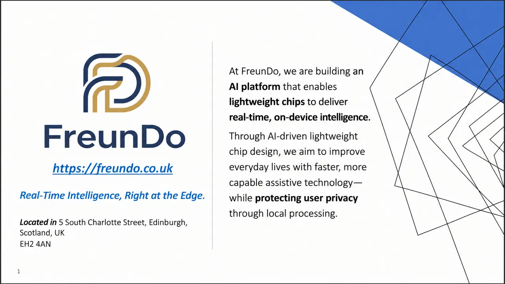

Speech in noise still breaks down
Complex environments mask important speech and make listening uncomfortable.
FreunDo is building a lightweight AI platform for low-latency, private, on-device speech intelligence — starting with hearing enhancement and expanding toward a unified acoustic model.
NOISY INPUT
ENHANCED SPEECH
Hearing devices operate under brutal constraints: tiny batteries, constrained compute, noisy real-world scenes and strict latency requirements. FreunDo is designed around those constraints from the start.
Complex environments mask important speech and make listening uncomfortable.
Latency, privacy and connectivity make local processing strategically important.
The market needs low-power, licensable intelligence designed for hearing and assistive audio.
FreunDo combines a lightweight RFD speech model with a hardware-level deployment strategy: FPGA validation first, then partner SoC integration and eventual ASIC/NPU migration.
Streaming, no look-ahead architecture built around RepConv, causal attention and a frequency-heterogeneous output head.
The roadmap packages model, RTL workflow, benchmark tools and an evaluation kit to shorten partner integration cycles.
A reusable acoustic intelligence layer for denoising, scene understanding, translation, alerts and user adaptation — deployable across hearing aids, earbuds, phones, wearables and dedicated edge silicon.
The deck frames a gap between proprietary hearing-aid stacks and broad edge-AI vendors: FreunDo’s intended position is a neutral, licensable, sub-10 ms, low-power, on-device layer for OEM / ODM integration.
*Deck assumption. Market concentration shown in the source pitch deck.
Stress-test a simple top-down adoption scenario using the market assumptions in the deck. This is an illustrative model, not a forecast.
At 0.75% share, 35% partner capture and 18% royalty-equivalent margin, the illustrative annual revenue is $4.6M.
A staged model links technical validation to commercial proof: evaluation kits → paid PoCs/NRE → licensing and royalties → broader platform and product opportunities.
RFD benchmark, listening tests, FPGA simulation.
<10 ms targetPartner-ready build, benchmark report and technical meetings.
30–50 leadsPaid pilots, partner adaptation and integration.
PoC £20k–£50kAnnual platform fee, per-device royalty, multi-market expansion.
£1–£3 / deviceSecured to support company setup, prototype development and FPGA/audio testing.
After prototype validation and first customer traction, alongside founder investment.
To scale sales, productisation, market expansion and the ASIC/NPU roadmap.
Engineering, AI model design and financial strategy are represented across the founding team, supported by technical and research advisors.
FPGA / SoC design · Hardware deployment · System integration
“Turning AI into real life impact.”
AI model design · Audio signal processing · Machine learning
“From algorithms to real-time AI model.”
Financial strategy · Capital raising · Operations
“Building a sustainable and scalable business.”
Browse all 20 slides without leaving the page, or download the original PowerPoint.
Download .pptx
FreunDo Ltd · 5 South Charlotte Street, Edinburgh, Scotland, UK, EH2 4AN